Hands-Free Microphone Is Inoperative
1. Before you begin, run the Components Check described on the first page and verify the problem.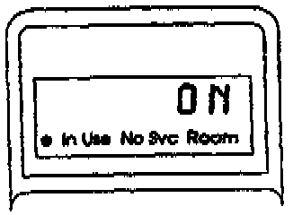
2. Turn the ignition switch to I (Accessory). Then turn the phone on and verify that it's unlocked. The handset display should read ON and stay ON throughout this test.
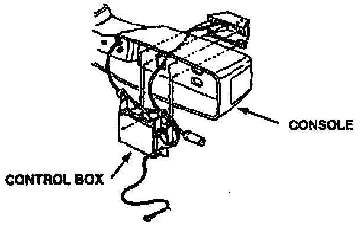
3. Remove the center console, and remove the control box under it.
4. Set your DVOM to volts and backprobe terminal 6 of the 6-P connector at the control box. Measure the voltage to ground.
Is there about 9 volts?
Yes - Go to the next step.
No - Go to step 7.
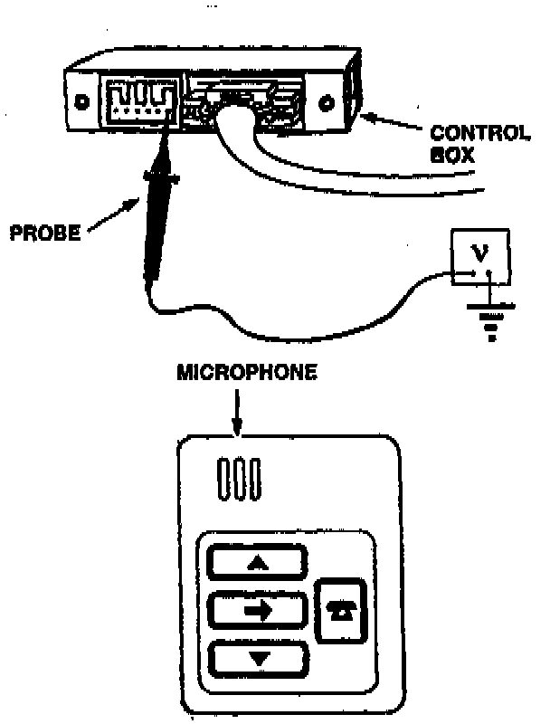
5. Backprobe the control box 6-P connector between terminal 6 and ground while blowing hard Into the microphone from about one inch away.
Does the voltage drop when you're blowing into the microphone?
Yes - Go to the next step.
No - Replace the switch module.[ ]
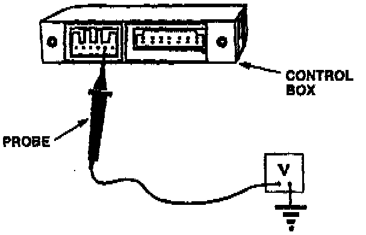
6. Disconnect the 2-P connector from the microphone and the 6-P connector from the control box. Backprobe the 6-P connector between terminal 5 and ground.
Is the voltage reading less than 0.2?
Yes - Replace the transceiver.[ ]
No - Replace the control box.[ ]
The "[ ]" symbol indicates the end of troubleshooting for this symptom.
7. Disconnect the 6-P connector at the control box.
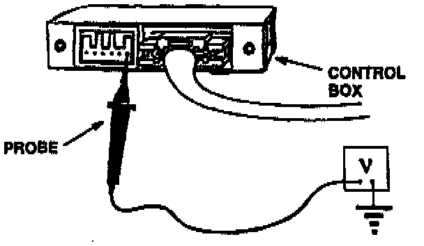
8. Set the DVOM to volts. At the 6-P receptacle on the control box, measure voltage between terminal 6 and ground.
Is there about 9.5 volts?
Yes - Replace the switch module.[ ]
No - Go to the next step.
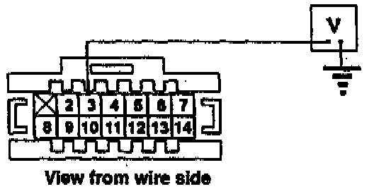
9. Backprobe the 14-P control box connector at terminal 3 and measure voltage to ground.
Is there about 9.5 volts?
Yes - Replace the control box.[ ]
No - Go to the next step.
10. Disconnect the 14-P connector from the control box.
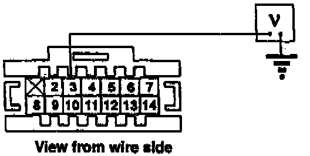
11. At the 14-P connector, check for voltage between terminal 3 and ground.
Is there about 9.5 volts?
Yes - Replace the control box.[ ]
No - Go to the next step.
12. Disconnect the 25-P connector from the transceiver and leave the 14-P connector disconnected from the control box.
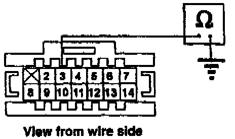
13. Set the DVOM to ohms. At the 14-P connector, check for continuity between terminal 3 and ground.
Is there continuity?
Yes - Go to step 16.
No - Go to the next step.
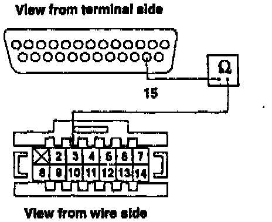
14. Turn the phone off. Check for continuity between terminal 15 of the 25-pin connector and terminal 3 of the 14-P connector.
Is there continuity?
Yes - Replace the transceiver.[ ]
No - Go to next step.
15. Check the connections at both DIN connectors (one at the control box, one at the transceiver).
Are the DIN connectors OK?
Yes - Repair the open wire between the 25-P transceiver connector and the 14-P control box connector.[ ]
No - Repair the faulty DIN connectors.[ ]
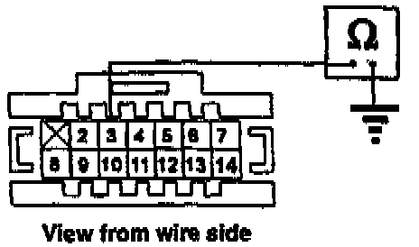
16. Set the DVOM to ohms. Backprobe the 14-P control box connector and check continuity between terminal 3 and ground.
Is there continuity?
Yes - Go to next step.
No - Go to step 19.
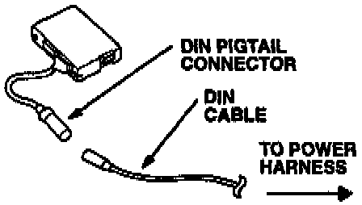
17. Disconnect the 13-P DIN pigtail connector from the DIN connector on the power harness.
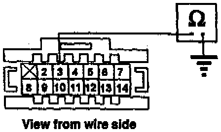
18. Again, backprobe the 14-P control box connector, checking continuity between terminal 3 and ground.
Is there continuity?
Yes - Replace the control box.[ ]
No - Replace the power harness. (Combination DIN cable connector and power line.[ ]
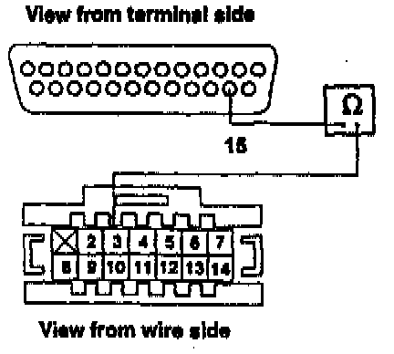
19. Backprobe the 14-P control box connector and check continuity between terminal 3 of the 14-P connector and terminal 15 of the 25-P transceiver connector.
Is there continuity?
Yes - Replace the transceiver.[ ]
No - Repair/replace the open wire between the 25-P transceiver connector and the 14-P control box connector.[ ]
The "[ ]" symbol indicates the end of troubleshooting for this symptom.